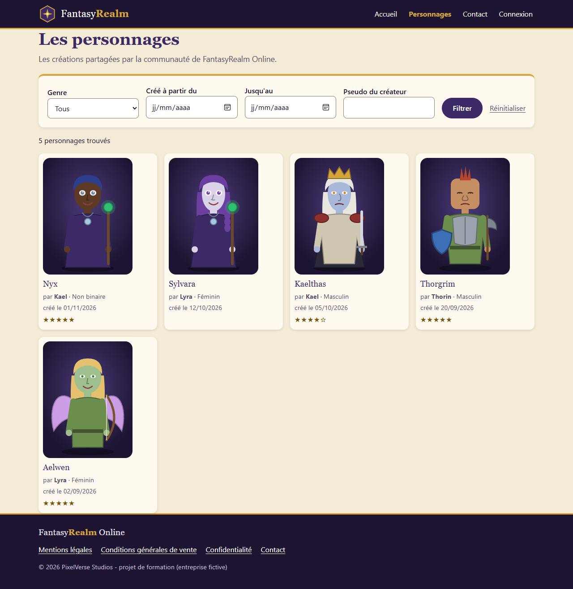
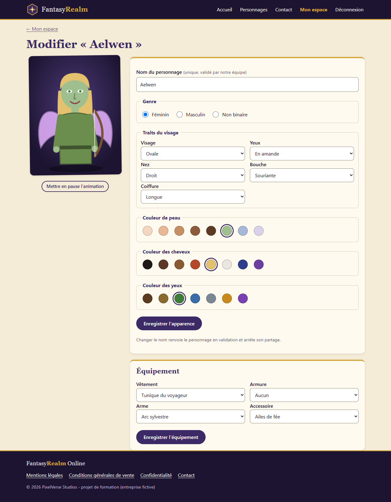
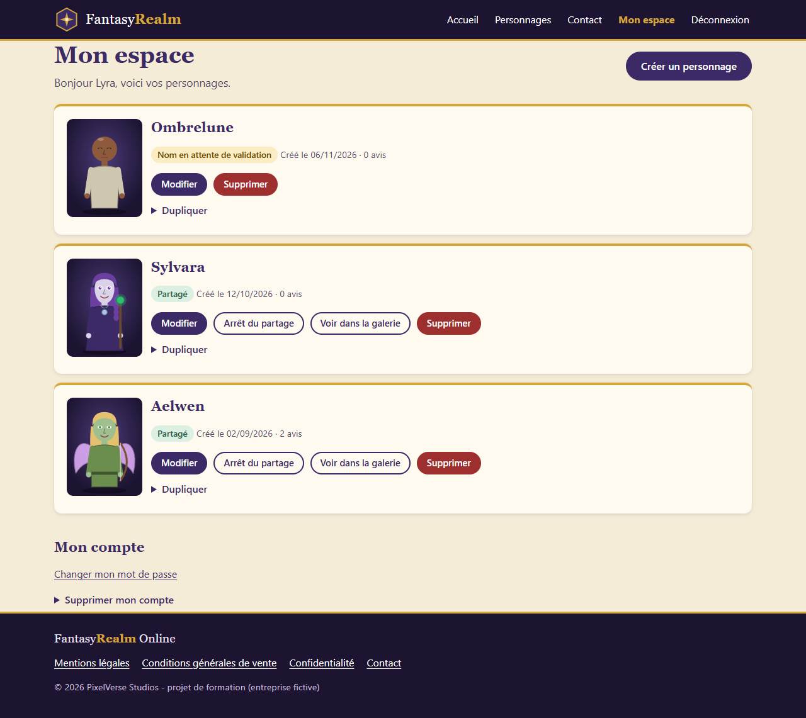
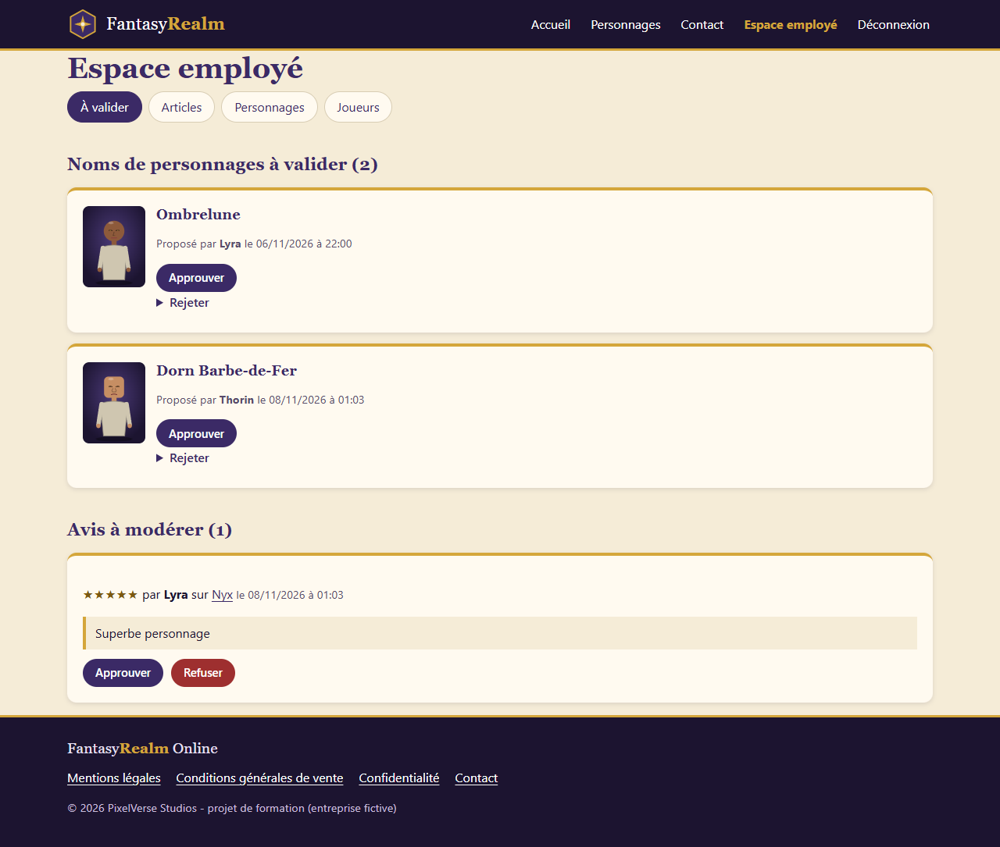
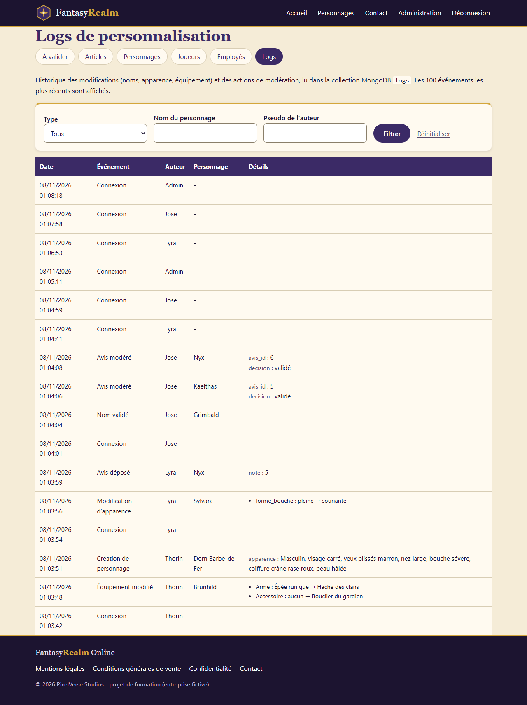

FantasyRealm Online
Manuel d'utilisation
Système de gestion de personnages - PixelVerse Studios
Présentation, identifiants de test et parcours pas à pas
FantasyRealm Online
Système de gestion de personnages - PixelVerse Studios
Présentation, identifiants de test et parcours pas à pas
FantasyRealm est le portail web qui permet aux joueurs du MMORPG FantasyRealm Online de créer, personnaliser, équiper et partager leurs personnages. Chaque personnage est dessiné automatiquement à partir de ses traits (visage, yeux, nez, bouche, coiffure, couleurs) et de son équipement, et apparaît « en action » avant même d'être enregistré.
Quatre profils utilisent l'application :
| Profil | Ce qu'il peut faire |
|---|---|
| Visiteur | Consulter l'accueil, la galerie des personnages partagés (avec filtres) et leur détail, écrire au support. |
| Joueur | Tout ce que fait le visiteur, plus : créer, modifier, équiper, partager, dupliquer et supprimer ses personnages ; donner un avis sur les personnages des autres ; changer son mot de passe ; supprimer son compte. |
| Employé | Approuver ou rejeter les noms de personnages (motif obligatoire), modérer les avis, gérer la bibliothèque d'articles, supprimer un personnage, suspendre ou supprimer un compte joueur. |
| Administrateur | Tout ce que fait l'employé, plus : créer, modifier (mot de passe), suspendre et supprimer les comptes employés ; consulter les logs de personnalisation. |
Application en ligne : [À COMPLÉTER : lien du déploiement] - en local : http://localhost:8090
(voir le README pour l'installation).
| Profil | Mot de passe | |
|---|---|---|
| Administrateur | admin@pixelverse-studios.local | Admin#Fantasy2026 |
| Employé (José) | jose@pixelverse-studios.local | Employe#Fantasy2026 |
| Joueuse (Lyra) | lyra@exemple.fr | Joueur#Fantasy2026 |
| Joueur (Thorin) | thorin@exemple.fr | Joueur#Fantasy2026 |
| Joueur (Kael) | kael@exemple.fr | Joueur#Fantasy2026 |
Les e-mails envoyés par l'application (validation d'un nom, nouvel avis, mot de passe provisoire, contact)
sont visibles en local dans Mailpit : http://localhost:8026.



Sur la fiche d'un personnage partagé par un autre joueur, choisissez une note de 1 à 5 et écrivez un commentaire. L'avis est visible après validation par un employé ; le propriétaire du personnage reçoit alors un e-mail.
En bas de Mon espace : changer de mot de passe, ou supprimer le compte et toutes ses données (droit à l'effacement, RGPD).
Connectez-vous avec jose@pixelverse-studios.local : vous arrivez dans l'Espace employé.

Connectez-vous avec admin@pixelverse-studios.local. L'administrateur dispose de tous les menus de l'employé, plus :
